Haremos un circuito con toboganes, balancin que tendrán cubos y esferas para que se deslicen.
Para ello necesitaremos una estructura de carpetas que tendrán el
contenido necesario para hacer el juego que lo iremos incluyendo poco a poco:
_GameAssets
• Materials.
o Todos los Objetos tienen que tener un material de color.
• Prefabs.
o Proyectil.
o Torreta.
• Scenes.
o Articulaciones.
• Scripts.
o Torreta.cs.
Tendremos que crear dentro de esta escena:
• Suelo.
• Torreta.
• SoporteFijo.
• CartelFijo.
• SoporteBisagra.
• CartelBisagra.
• SoporteMuelle.
• CartelMuelle.

Tendremos una Torreta que se moverá de derecha a izquierda y de arriba a abajo y disparará a los carteles
con el espacio.
Los postes tienen unos carteles que se unen mediantes unos Joint y se comportarán de distinta manera cuando
sean tocado por la bala.
Tiene que mirar hacia la Z. Está formado por los siguientes componentes:
• Torreta (Cubo). Script Torreta.cs.
o BaseCanyon (Esfera).
- EjeCanyon (GO vacío).
• Canyon (Cilindro).
o GeneracionProyectiles.
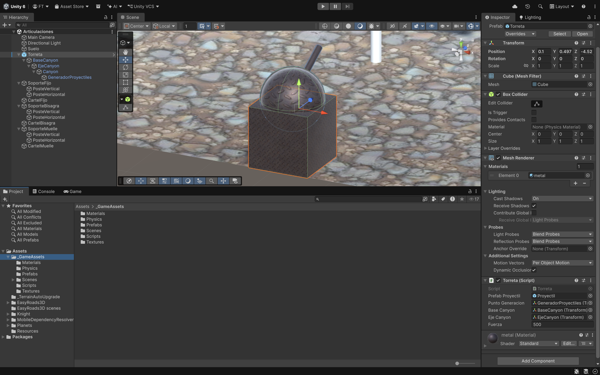
Tendremos unas variables que pasaremos por parámetro desde el Editor:
• [SerializeField] GameObject prefabProyectil.
• [SerializeField] Transform puntoGeneracion.
• [SerializeField] Transform baseCanyon.
• [SerializeField] Transform ejeCanyon.
• [SerializeField] float fuerza = 100.
• Y para poder recoger la rotación horizontal y vertical: float rotacionHorizontal, rotacionVertical.
Acordarse de arrastrar estos parámetros desde el Editor cuando lo vayamos teniendo creados.
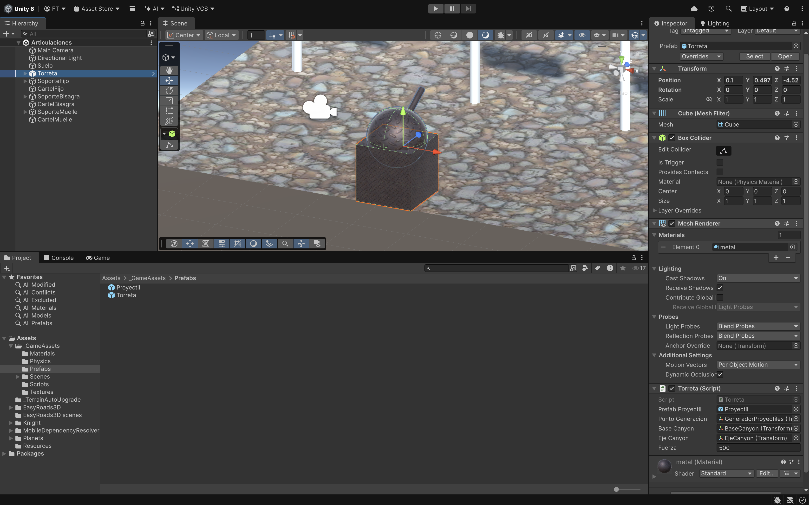
Primero haremos el movimiento de la Torreta. Eventos:
• Start:
o Recoger la rotacionHorizontal de la baseCanyon.rotation.y.
o Recoger la rotacionVertical de ejeCanyon.rotation.x.
• Update:
o Recoger las flechas con Input.Getaxis las flechas con Vertical/Horizontal.
o BaseCanyon rotamos en Y recogiendo la flechas en Horizontal.
o EjeCanyon rotamos en X recogiendo la flechas en Vertical pero también ponemos la Horizontal
porque sino se comporta de forma extraña.
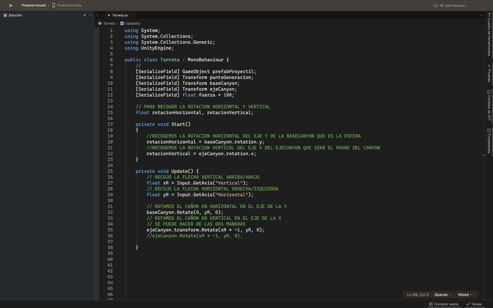
Al ejecutarlo se nos pasa el giro asi que vamos acotar el giro tanto en la Base como en el eje.
• Update:
o Dejamos comentado le rotacion de BaseCanyon y EjeCanyon y añadimos lo siguiente:
o RotacionHorizontal acumulada de YR.
o La RotacioHorizontal será entre -90 y 90. Lo hacemos con el método Math.Clamp.
o Y esta RotacionHorizontal se la añadimos al BaseCanyon usando Quaternion.Euler en Y.
o RotacionVertical acumulada de XR.
o Haremos lo mismo con la RotacionVertical pero entre -20 y 20.
o Y esta RotacionVertical se la añadimos al EjeCanyon usando Quaternion.Euler en X pero *-1.
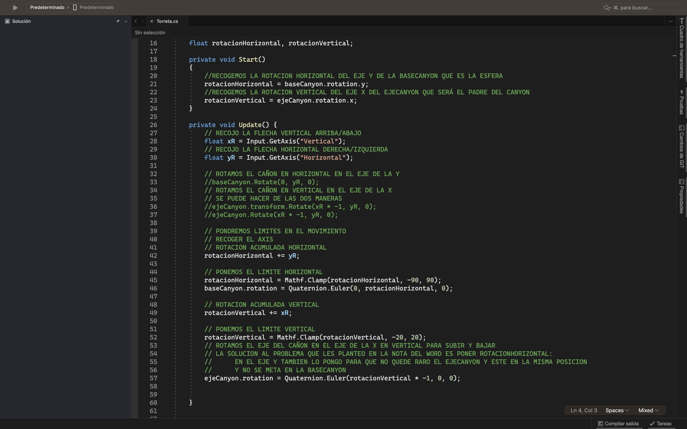
Pero cuando movemos las flechas derecha e izquierda algo raro ocurre con el EjeCanyo. ¿Como lo solucionamos?.
Poniendo la rotacionHorizontal en la Y.
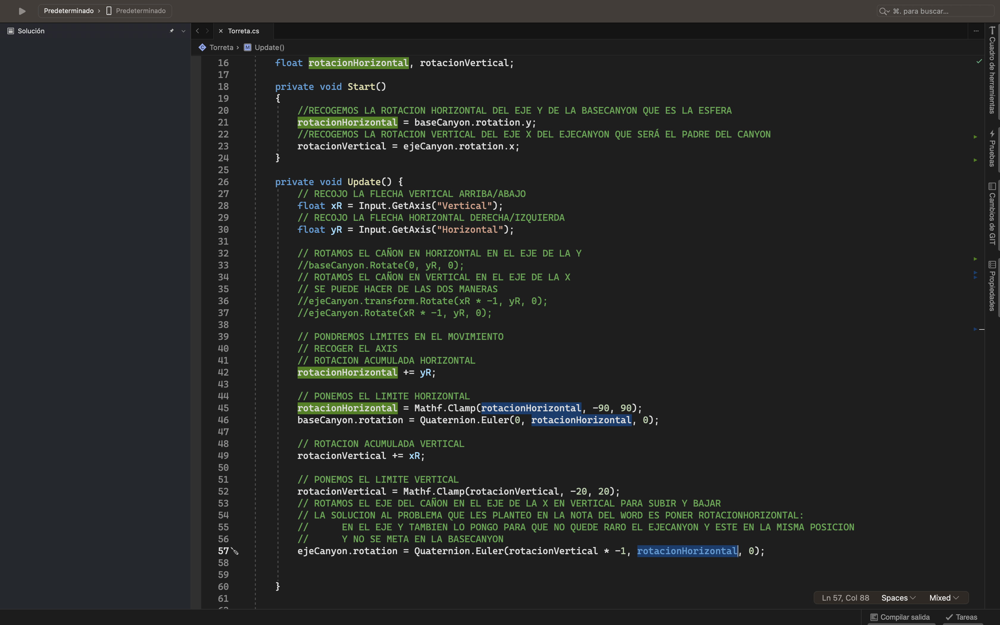
Nos falta crear el proyectil que lanzará el cañon cuando le demos al espacio:
• Buscar una proyectil y crear un prefab con el componente RigidBody y con gravedad.
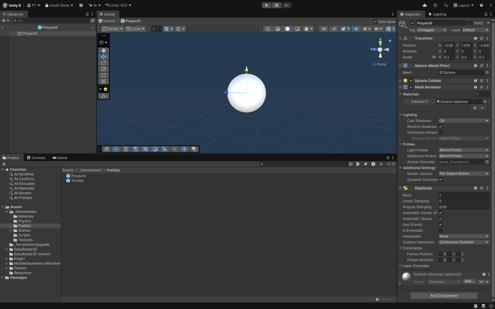
En el Update cuando pulsamos el espacio creamos el proyectil en el puntoGeneracion y le damos un AddRelativeForce al Rigidbody.
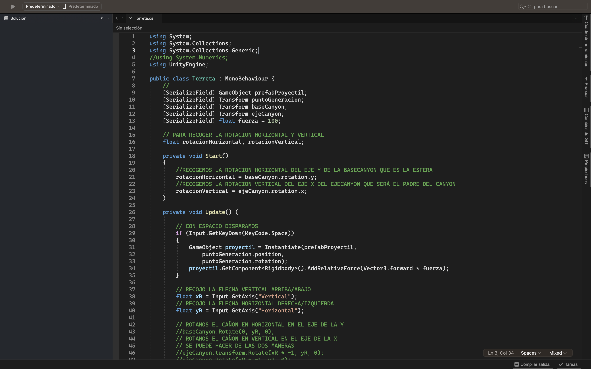
Necesitamos 3 carteles: CartelFijo, CartelBisagra y CartelMuelle. Tendrán un componente Rigidbody cada uno.
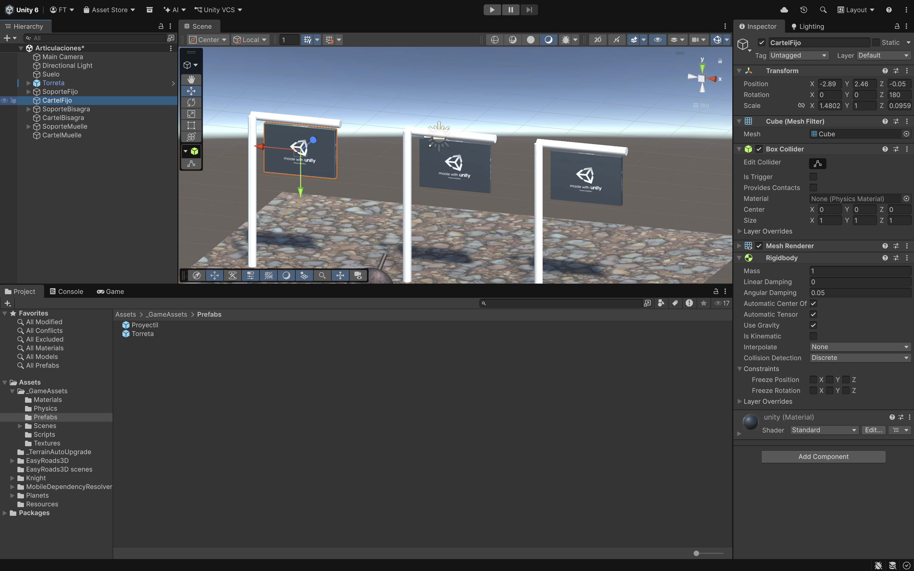
El soporte fijo es un GO vacío. Tiene 2 objetos más:
• PosteVertical (Cilindro).
• PosteHorizontal (Cilindro). Componentes:
o Rigidbody. Tiene seleccionado IsKinematic.
o Fixed Joint es una articulación que une dos objetos mediante físicas. Funciona como emparentar
objetos (Parenting) pero permite que se rompan ante impactos fuertes, ideal para simular cadenas, objetos
rompibles o para conectar piezas mecánicas sin modificar la jerarquía original.
La propiedad isKinematic en Unity desactiva el control del motor de físicas sobre un Rigidbody. Al activarla (marcarla como true), el objeto ignora la gravedad y las fuerzas de colisión. En su lugar, se mueve exclusivamente a través de scripts o animaciones, aunque sigue pudiendo afectar físicamente a otros objetos.
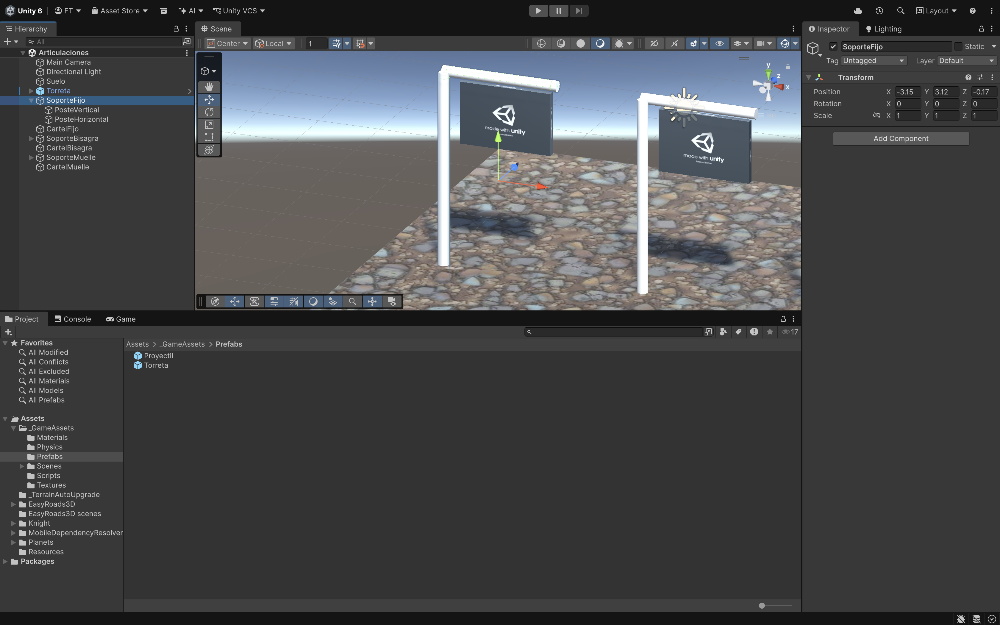
Hay que arrastrar el CartelFijo al Connected Body del Fixed Joint. Le podemos añadir una force....
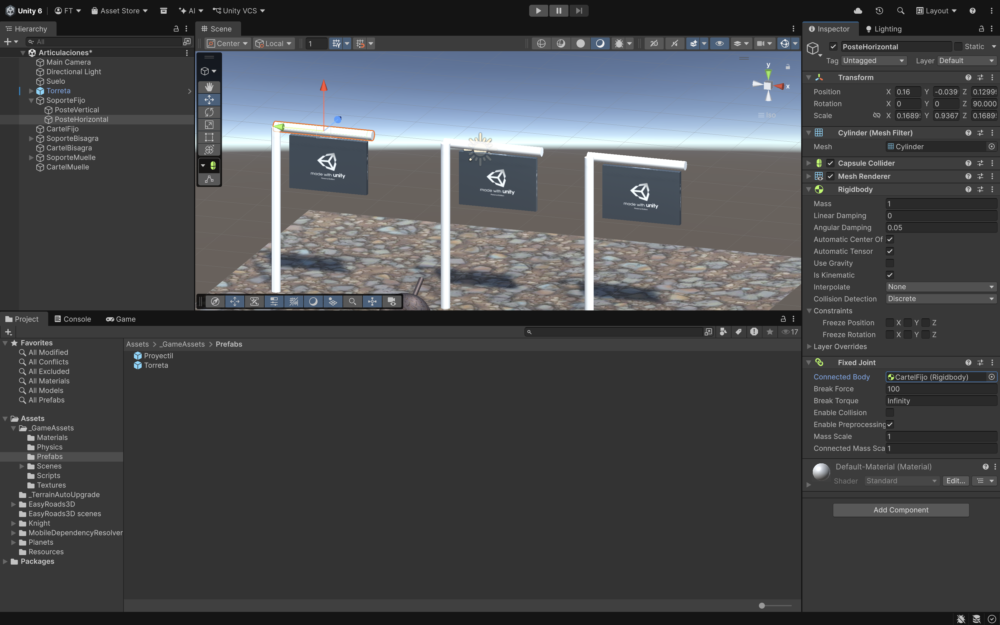
El soporte bisagra es un GO vacío. Tiene 2 objetos más:
• PosteVertical (Cilindro).
• PosteHorizontal (Cilindro). Componentes:
o Rigidbody. Tiene seleccionado IsKinematic.
o Hinge Joint es una articulación que une dos objetos físicos (Rigidbodies) restringiendo sus
movimientos para que actúen como si estuvieran conectados por una bisagra. Es ideal para simular puertas,
péndulos, manivelas o cadenas, permitiendo la rotación libre o limitada sobre un eje específico..
Hay que arrastrar el CartelBisagra al Connected Body del Hinge Joint.
- Hay que arrastrar el CartelBisagra a Connected Body.
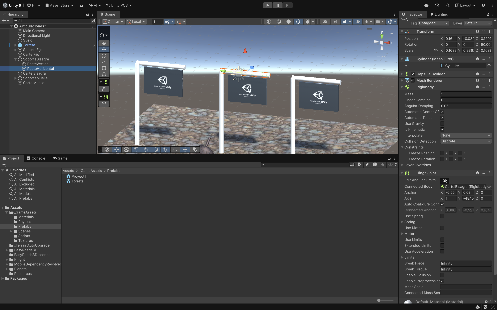
El soporte muelle es un GO vacío. Tiene 2 objetos más:
• PosteVertical (Cilindro).
• PosteHorizontal (Cilindro). Componentes:
o Rigidbody. Tiene seleccionado IsKinematic.
o Tendrá 2 componentes Spring Joint es una articulación que une dos Rigidbodies o un punto fijo.
Actúa como un resorte invisible, aplicando fuerzas automáticamente para que los objetos intenten mantener
una distancia específica, permitiendo que se estiren o compriman de forma realista.
Ponemos 2 ya que iran en los extremos del PosteHorizontal moviendo en Anchor Y (aparecerán unos puntos).
- Hay que arrastrar el CartelMuelle a cada Sprint Joint/Connected Body.
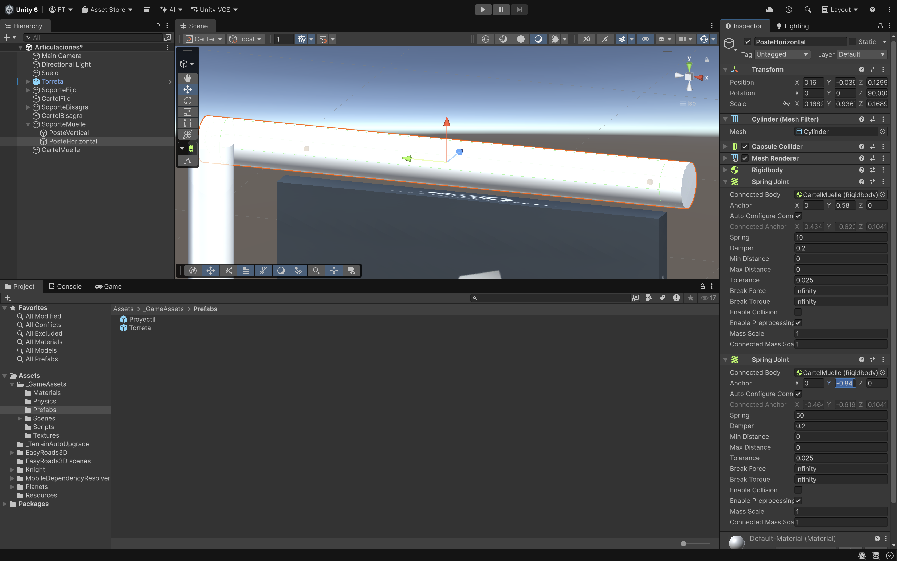